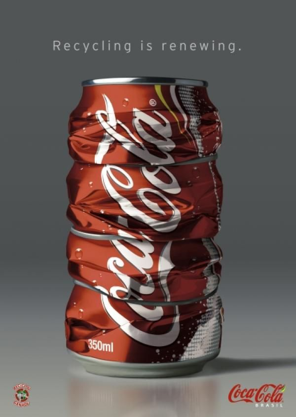
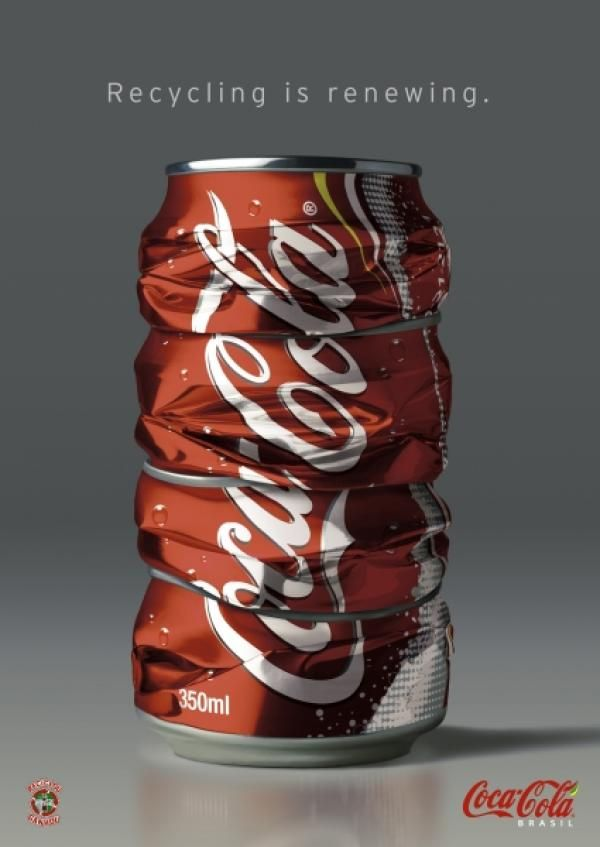

5 films die je niet mag missen in Oktober
1. Loveless
We beginnen de maand met Loveless, een Russisch drama dat de juryprijs won tijdens het filmfestival van Cannes. Boris (Rozin) en Zhenya (Spivak) liggen in een scheiding. Over het hoofd van hun enige zoon maken ze onafgebroken ruzie en proberen zo snel mogelijk van elkaar en hun appartement af te komen. Allebei bereiden ze hun respectievelijke toekomst voor. Boris heeft een relatie met een jonge vrouw, die inmiddels zwanger van hem is en Zhenya heeft een relatie met een rijke man. Ze worden volledig opgeslokt door hun eigen bestaan en geen van beiden lijkt nog oog te hebben voor Alyosha (Matvey Novikov), hun 12-jarige zoon. Totdat hij verdwijnt. Loveless, ofwel Nelyubov, is uiteraard goed ontvangen. Op RottenTomatoes heeft de film gemiddeld een 8,1 en is maar liefst 90 procent van de critici positief. Consensus is er nog niet op de site, maar we zien dat veel critici vinden dat Zvyagintsev wederom laat zien te beschikken over het opmerkelijke talent een dramatisch microkosmos te creëren.
2. Geostorm
Als je wel houdt van wat pulp, zit je vermoedelijk goed bij Geostorm. De film is geïnspireerd op een van de ideeën om klimaatverandering tegen te gaan: geo-engineering. Daarbij wordt de atmosfeer, of bijvoorbeeld de invloed van de zon veranderd, om de wereldwijde temperaturen te veranderen. In Geostorm vertonen satellieten die het weer controleren ineens kuren. Het is aan Jake Lawson (Butler) en een aantal andere astronauten om de ruimte in te gaan en te proberen de problemen van de satellieten op te lossen. Al snel ontdekken ze dat de problemen bepaald geen ongeluk zijn. En dus moeten ze helemaal uitgeschakeld worden, een mogelijkheid waarover maar één man wereldwijd geschikt: de president van de Verenigde Staten (Andy Garcia). De film vormt overigens het regiedebuut van Dean Devlin, de man die we kennen van een heleboel spektakelfilms van Roland Emmerich, waaronder Independence Day (1996),Godzilla (1998) en Independence Day: Resurgence (2016).
3. American Assasin
American Assassin is de eerste nieuwe film van Dylan O'Brien sinds hij op de set van Maze Runner: The Death Cure een ongeluk meemaakte. Deze film is gebaseerd op een van de vijftien boeken die Vince Flynn schreef over het personage Mitch Rapp. In American Assassin voelt Mitch (O'Brien) zich gesterkt door gebeurtenissen uit het verleden en is hij vastbesloten wraak te nemen. Samen met veteraan Stan Hurley (Keaton), die de Koude Oorlog meemaakte, wordt Rapp door de adjunct-directeur van de CIA aangesteld om een reeks ogenschijnlijk willekeurige aanslagen op militaire en burgerlijke doelwitten te onderzoeken. Al snel ontdekken ze een patroon van geweld en gaan ze op een gezamenlijke missie: het tegenhouden van een mysterieuze man (Kitsch) en voorkomen dat er een nieuwe Wereldoorlog begint. Heel goed wordt American Assassin overigens niet ontvangen. Op RottenTomatoes heeft 'ie gemiddeld een 4,7. De film is iets te gemakzuchtig en overstijgt daardoor de conventies van het genre niet.
4. Loving Vincent
Loving Vincent is een unieke film. In 65.000 frames, met de hand geschilderd door meer dan 125 kunstenaars die dezelfde technieken als Vincent van Gogh gebruikten, komt het verhaal tot leven. Loving Vincent begint op het moment dat Vincent net succesvol begint te worden. Hij pleegt zelfmoord. Was het vanwege zijn geestelijke gezondheid of de problemen met zijn broer? Was het een wanhoopsdaad om meer erkenning te krijgen voor zijn werk? Of was het helemaal geen zelfmoord? Armand Roulin, de zoon van Van Goghs postbode, gaat naar Auvers om daar het mysterie rond Vincents dood te ontrafelen. De verschillende mensen (allemaal geschilderd door Van Gogh) die hij tijdens zijn reis ontmoet, hebben elk hun eigen verhaal. Het blijkt moeilijk de waarheid over de getroebleerde Vincent te achterhalen. Op RottenTomatoes is er nog geen consensus te vinden, maar lijken de reacties positief te zijn. Het verhaal schijnt niet zo sterk te zijn, maar de uitvoer wel.
5. HHhH
HHhH, Himmlers hersenen heten Heidrich, zo heet de opvallende eerste roman van de Franse schrijver Laurent Binet. Het boek draait om Operatie Anthropoid, de moordaanslag die gepleegd werd op Reinhard Heydrich door Jozef Gabčík en Jan Kubi. Het is 1942, het Derde Rijk bevindt zich op zijn hoogtepunt. Het Tsjechische verzet besluit de meest ambitieuze militaire operatie van de Tweede Wereldoorlog uit te voeren, waarin de jonge rekruten Gabčík (Reynor) en Kubi (O'Connell) de hoofdrol spelen. Zij worden naar Praag gestuurd om de meest meedogenloze nazi, Reinhard Heydrich (Jason Clarke), te vermoorden. Hij is degene die de Holocaust bedacht, het hoofd van de SS en van de Gestapo en dus een verschrikkelijk mens. Op moment van schrijven zijn er nog niet zoveel reacties. The Hollywood Reporter is in elk geval positief en heeft vooral lof voor regisseur Jimenez. Minder lof is er voor de structuur, maar die lijkt gebaseerd op het wisselende perspectief van het boek.
Klik hier voor nog meer leuke films in oktober